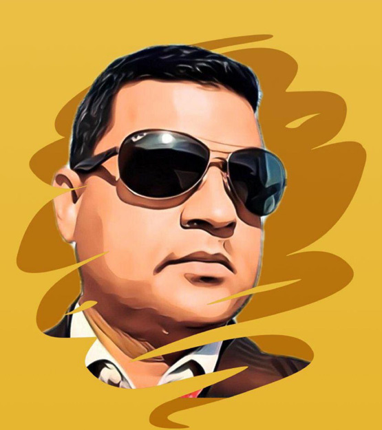
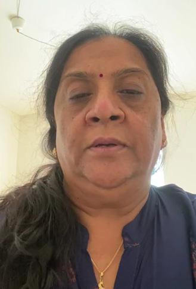
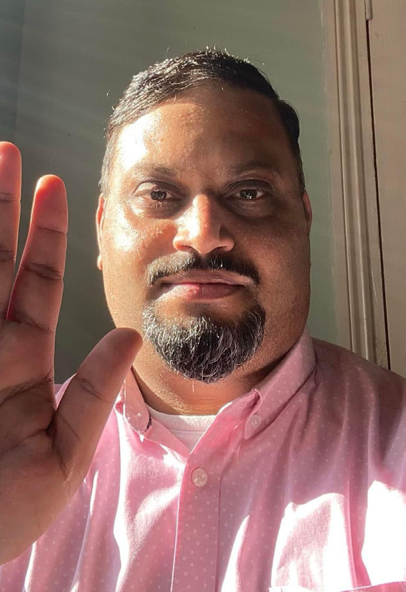

The Great Deception:
The Great Deception:
Jaffna Monitor
hellojaffnamonitor@gmail.com
27
I
t has been fourteen years since the end of the
civil war in Sri Lanka, during which the leader
of the Liberation Tigers of Tamil Eelam (LTTE)
and his family, including his wife and children,
were killed. However, recurring rumors persist that
Prabhakaran is still alive, reminiscent
of a lingering drizzle after the rain has
ceased. Someone spreads such rumors
every year, claiming to have spoken
with Prabhakaran. Among those
who frequently make these claims,
Nedumaran and Kasi Anandan in Tamil
Nadu are prominent figures.
As usual, at the beginning of this year,
they announced to journalists that
Prabhakaran was alive and claimed he
would soon make a public appearance,
stirring interest among Tamil people in
Tamil Nadu and the diaspora. However,
everyone has soon forgotten this news in today's fast-
paced world. The Tamils living in Sri Lanka are not
concerned about these rumors because they know
the truth, and their current needs and lifestyles have
moved to a different phase. Moreover, they despise the
word 'war.'
While everyone had forgotten the announcement of
Prabhakaran's return, in the lead-up to November, the
month of 'Maaveerar Naal' approached, Nedumaran
and Kasi Anandan released a new statement. This
time, they claimed not Prabhakaran, but his daughter,
Duvaraga, is alive and will address the people on
Maaveerar Day.
Let's see what purpose these announcements serve
and who is behind them.
After the defeat of the LTTE and the demise of their
key commanders, leader, and his family during the
final stages of the Eelam War between 2006-2009,
the organization faced a complex and contentious
phase. During this critical period, LTTE
fund collectors had raised millions of
dollars under the banner of the "Tamil
Eelam Liberation Fund," contributing
to the LTTE's substantial financial
reserves. Over time, the LTTE amassed
significant wealth, particularly in
Europe and Canada, investing in various
enterprises such as petrol stations,
supermarkets, and even a few temples
managed through proxies. Following the
LTTE's collapse, the division of these
vast assets, held in foreign countries
under the names of the Tigers and
their intermediaries, became a source
The Great Deception:
Written By:
Gowripal Sri (a) Sathiri
How Prabhakaran's Name is
Used to Swindle Funds
Gowripal Sri, formerly known as Sathiri in the
LTTE ranks, is a writer based in France.
Aruna, Elder Sister of Mathivathani,
Wife of LTTE Supremo Prabhakaran
OPINION


Jaffna Monitor hellojaffnamonitor@gmail.com 28 of conflict. This dispute extended to the organization's foreign branches, including the International Secretariat, the Head Secretariat, and the Tamil Rehabilitation Organization, as they grappled with allocating and sharing funds collected from the people during the war's final stages. The situation escalated when Parithi, the French representative of the International Secretariat, was killed. The need to divide these assets over time and the desire to conceal internal issues from the public led these organizations to be among the first to declare that Prabhakaran was still alive and would return. This announcement was initially a diversion from the disputes over asset division. These conflicts attracted the attention of police in various countries, leading to the realization that they involved a struggle over the LTTE's proxy assets. Consequently, some assets were seized and nationalized. Realizing the gravity of their situation, the higher-ups in the organization settled their disputes and divided the assets among themselves, going their separate ways. Disappointed by this development, some individuals conducted one last large-scale fundraising operation before withdrawing. This operation was led by a coalition including Cellaiya Jayabalan, known as Abdullah from Switzerland, Kirubakaran from France, Sreeskantharaja from England, Aruna (who is the elder sister of Prabhakaran's wife, Mathivathani, from England), Inparasa from Sri Lanka, Sivajilingam (a Member of Parliament from Sri Lanka), and others from Tamil Nadu like Nedumaran, Kasi Anandan, and V. Gowthaman. According to sources, Nedumaran and Kasi Anandan were designated as the authoritative spokespeople of a significant coalition. Notably, Vaiko and Thirumavalavan, who typically participate in such groups, abstained this time, possibly due to their engagement with the DMK alliance in the government. Efforts to include Seeman, known for his audacious and often unverifiable claims like dining on tortoise meat with Prabhakaran, were unsuccessful. Seeman, who firmly believed Prabhakaran was deceased and based his political actions on this narrative, chose not to join a coalition asserting Prabhakaran's survival, as it contradicted his stance. Earlier this year, sources reported that Nedumaran and Kasi Anandan, after claiming the impending return of Prabhakaran, intended to broadcast a recorded speech in his voice on Maaveerar Day. To accomplish this, they sought the assistance of Tamil Nadu mimicry artists. However, these artists ultimately declined the task due to concerns about fear and potential legal repercussions. Ultimately, the 'Great Deception' was a worldwide wake-up call for the Tamil community. It highlighted the need for transparency and accountability in their political and fundraising activities. The tragic exploitation of a community's pain for personal gain underscored the importance of moving beyond the shadows of the past and focusing on building a future based on truth, justice, and reconciliation. EDITOR’S NOTE: Please note that the views expressed in this article are solely those of the writer. Our publication, Jaffna Monitor, does not necessarily endorse or align with these opinions. Kirubakaran Sreeskantharaja, Also Known as Cheraman Cellaiya Jayabalan, Also Known as Abdullah
